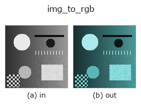

bridge op• 데이터 종류: image → rgbimage
• 호출: fullseye.apply(img, "img_to_rgb", a=0.5, b=0.5)(2-D 는 이미지 1 장 + 스칼라 노브 2 개 a,b∈[0,1] 모델)

*그림은 128×128 합성 입력에서 실제로 실행한 출력. 왼쪽이 입력, 오른쪽이 출력. 점군은 위에서 본 산점도(밝기 = z), 1-D 열은 꺾은선, 볼륨은 z 방향 최대값 투영, 동영상은 가운데 프레임, 복소 영상은 진폭이며, 그림이 되지 않는 반환값은 값 자체를 표시한다.*
노브 a 를 훑기(0.1 / 0.5 / 0.9, 다른 노브는 기본값):
▸ img_to_rgb: knob a sweep (docs site)
노브 b 를 훑기(0.1 / 0.5 / 0.9, 다른 노브는 기본값):
▸ img_to_rgb: knob b sweep (docs site)
다른 영상에서도(합성 장면 / 사진 / 동전. 윗줄이 입력, 아랫줄이 그 출력. 노브는 기본값):
▸ img_to_rgb: other inputs (docs site)
*4열은 컬러 (H,W,3) 입력. 이 op는 채널을 넘나들지 않고 컬러를 다룰 수 있다(색 채널을 세 번째 공간축으로 컨볼루션하지 않음).*
회색 영상에 색상과 채도를 주어 (H,W,3) RGB 영상(sort `rgbimage`)으로 만든다.
> 아래 상세 설명은 원문입니다 —— 요약과 제목은 번역되어 있습니다.
二色性反射モデル(拡散 = 着色、鏡面 = 白)の形で作る:
`mix = (1 - sat) + sat * chroma、chroma = HSV(hue, 1, 1)`、
`spec = clip((gray - 0.75) / 0.25, 0, 1) ** 2`、
`rgb = gray * (mix * (1 - spec) + spec)`。
つまり暗〜中間の画素は色相で着色され、**明るさ 0.75 を超える画素ほど白(無彩色)に
戻る**。彩度 0 なら 3 チャンネル同値のグレー(`spec` に依らず入力そのもの)。
どのチャンネルも入力以下なので値域は [0,1] に留まる。
• `a → 色相 hue = a`(0 で赤、1/3 で緑、2/3 で青、1 で赤に戻る)。
• `b → 彩度 sat = b`(b=0.5 で半分だけ着色)。
• 返り値: `(H, W, 3)` float64。
• 鏡面の膝 `SPECULAR_KNEE = 0.75` は固定(ノブにしていない)。
なぜ鏡面を入れるか(2026-09-07 実測): 単純な着色 `gray * mix` だと明るい部分も
同じ色相の飽和色になり、`tb_specular_coefficient_map / tb_specular_diffuse_split` /
`tb_specular_free_transform` が見る「無彩色のハイライト」が 1 画素も無く、
鏡面係数が全 0 の真っ黒な図になった。合成の入力側が族の前提(二色性)を満たす。
使いどころ: `tb_rgb_to_quaternion`(→ qimage、四元数の色 op の入口)、
`tb_specular_free_transform / tb_wetness / tb_sensor_capture`。
自然画像の色を再現するものではない(単一色相の合成)。
• 샘플 데이터 카탈로그(DL URL / 라이선스) —— 2-D 는 skimage.data(BSD/public)+ 합성, 3-D 는 실데이터 소스(Stanford/PDS 등)의 DL URL.
• 연산자의 내력·참고문헌 —— 이 연산자 족의 바탕이 된 연구/기법의 출처.
• 알고리즘의 정전(저자·연도)과 용도는 위의 패밀리 사용 가이드에 적혀 있습니다.
아래 프로그램은 실제로 실행됨을 확인했습니다(그림과 같은 입력). Studio 도움말에서는 이 블록이 버튼이 되어 즉시 불러와 실행할 수 있습니다.
img_to_rgb 0.50 0.50
▸ Load this pipeline · Load & run
• gallery2d_bridge — py -3.11 examples/gallery2d_bridge.py
rgbimage 를 입력으로 받는 것)identity · tb_wetness · tb_sensor_capture · tb_specular_diffuse_split · tb_specular_coefficient_map · tb_specular_free_transform · tb_rgb_to_quaternion
bridge)img_to_points · img_to_keypoints · img_to_signal · img_to_counts · img_to_matrix · img_to_video · img_to_volume · img_to_lightfield
*Provenance: ops.py — 2D 연산자 레지스트리. 이 op 노트는 tools/opdocs.py md 가 자동 생성합니다(직접 편집하지 마세요).*
© 2026 Kazufumi Furuse — Fullseye operator documentation. Licensed under Apache-2.0.
{kind=link}
{kind=link}
{kind=link}